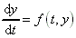
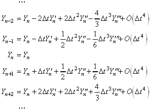
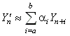
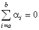
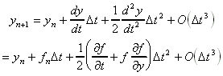
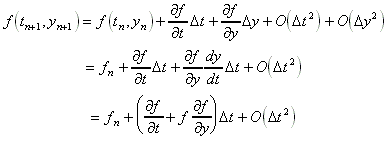
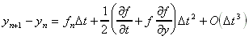
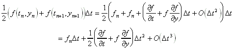
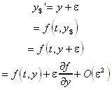

Title Page
Contents
1. Introduction
2. Key Idea
3. Root finding in one dimension
4. Linear equations
5. Numerical integration
6. First order ordinary differential equations
7. Higher order ordinary differential equations
8. Partial differential equations
The key idea behind numerical solution of odes is the combination of function values at different points or times to approximate the derivatives in the required equation. The manner in which the function values are combined is determined by the Taylor Series expansion for the point at which the derivative is required. This gives us a finite difference approximation to the derivative.
Consider a first order ode of the form
 , | (60) |
subject to some boundary/initial condition f(t=t0) = c. The finite difference solution of this equation proceeds by discretising the independent variable t to t0, t0+Dt, t0+2Dt, t0+3Dt, … We shall denote the exact solution at some t = tn = t0+nDt by yn = y(t=tn) and our approximate solution by Yn. We then look to solve
| (61) |
at each of the points in the domain.
If we take the Taylor Series expansion for the grid points in the neighbourhood of some point t = tn,
 , | () | |
we may then take linear combinations of these expansions to obtain an approximation for the derivative Y'n at t = tn, viz.
 . | () | |
The linear combination is chosen so as to eliminate the term in Yn, requiring
 | (64) | |
and, depending on the method, possibly some of the terms of higher order. We shall look at various strategies for choosing ai in the following sections. Before doing so, we need to consider the error associated with approximating yn by Yn.
The global truncation error at the nth step is the cumulative total of the truncation error at the previous steps and is
| (65) | |
In contrast, the local truncation error for the nth step is
| (66) | |
where yn* the exact solution of our differential equation but with the initial condition yn-1*=Yn-1. Note that En is not simply the sum of en. It also depends on the stability of the method (see section 6.7 for details) and we aim for En = O(en).
The Euler method is the simplest finite difference scheme to understand and implement. By approximating the derivative in ( 61 ) as
| (67) | |
in our differential equation for Yn we obtain
| (68) | |
Given the initial/boundary condition Y0 = c, we may obtain Y1 from Y0 + Dtf(t0,Y0), Y2 from Y1 + Dtf(t1,Y1) and so on, marching forwards through time. This process is shown graphically in figure 18 .
The Euler method is termed an explicit method because we are able to write down an explicit solution for Yn+1 in terms of "known" values at tn. Inspection of our approximation for Y'n shows the error term is of order Dt2 in our time step formula. This shows that the Euler method is a first order method. Moreover it can be shown that if Yn=yn+O(Dt2), then Yn+1=yn+1+O(Dt2) provided the scheme is stable (see section6.7 ).
The Euler method outlined in the previous section may be summarised by the update formula Yn+1 = g(Yn,tn,Dt). In contrast implicit methods have have Yn+1 on both sides: Yn+1 = h(Yn,Yn+1,tn,Dt), for example. Such implicit methods are computationally more expensive for a single step than explicit methods, but offer advantages in terms of stability and/or accuracy in many circumstances. Often the computational expense per step is more than compensated for by it being possible to take larger steps (see section6.7 ).
The backward Euler method is almost identical to its explicit relative, the only difference being that the derivative Y'n is approximated by
| (69) | |
to give the evolution equation
| (70) | |
This is shown graphically in figure 19 .
The dependence of the right-hand side on the variables at tn+1 rather than tn means that it is not, in general possible to give an explicit formula for Yn+1 only in terms of Yn and tn+1. (It may, however, be possible to recover an explicit formula for some functions f.)
As the derivative Y'n is approximated only to the first order, the Backward Euler method has errors of O(Dt2), exactly as for the Euler method. The solution process will, however, tend to be more stable and hence accurate, especially for stiff problems (problems where f' is large). An example of this is shown in figure 20 .
The Romberg integration approach (presented in section5.6 ) of using two approximations of different step size to construct a more accurate estimate may also be used for numerical solution of ordinary differential equations. Again, if we have the estimate for some time t calculated using a time step Dt, then for both the Euler and Backward Euler methods the approximate solution is related to the true solution by Y(t,Dt) = y(t) + cDt2. Similarly an estimate using a step size Dt/2 will follow Y(t,Dt/2) = y(t) + 1/4cDt2 as Dt0. Combining these two estimates to try and cancel the O(Dt2) errors gives the improved estimate as
| (71) |
The same approach may be applied to higher order methods such as those presented in the following sections. It is generally preferable, however, to utilise a higher order method to start with, the exception being that calculating both Y(t,Dt) and Y(t,Dt/2) allows the two solutions to be compared and thus the trunctation error estimated.
If we use central differences rather than the forward difference of the Euler method or the backward difference of the backward Euler, we may obtain a second order method due to cancellation of the terms of O(Dt2). Using the same discretisation of t we obtain
| (72) | |
Substitution into our differential equation for Yn gives
| (73) |
The requirement for f(tn+1/2,Yn+1/2) is then satisfied by a linear interpolation for f between tn-1/2 and tn+1/2 to obtain
| (74) |
As with the Backward Euler, the method is implicit and it is not, in general, possible to write an explicit expression for Yn+1 in terms of Yn.
Formal proof that the Crank-Nicholson method is second order accurate is slightly more complicated than for the Euler and Backward Euler methods due to the linear interpolation to approximate f(tn+1/2,Yn+1/2). The overall approach is much the same, however, with a requirement for Taylor Series expansions about tn::
 | (75a) |
 | ( 75 b) |
Substitution of these into the left- and right-hand sides of equation ( 74 ) reveals
 | (76a) |
and
 | ( 76 b) |
which are equal up to O(Dt3).
As an alternative, the accuracy of the approximation to the derivative may be improved by using a linear combination of additional points. By utilising only Yn-s+1,Yn-s+2,…,Yn we may construct an approximation to the derivatives of orders 1 to s at tn. For example, if s = 2 then
| (77) |
and so we may construct a second order method as
| (78) |
For s=3 we also have Y'"n and so can make use of a second-order one-sided finite difference to approximate Y"n = f'n = (3fn 4 fn1 + fn2)/2Dt and include the third order Y'"n = f"n = (fn 2fn1+fn2)/Dt2 to obtain
| (79a) |
These methods are called Adams-Bashforth methods. Note that s = 1 recovers the Euler method.
Implicit Adams-Bashforth methods are also possible if we use information about fn+1 in addition to earlier time steps. The corresponding s = 2 method then uses
| (80) |
to give
| (81) |
This family of implicit methods is known as Adams-Moulton methods.
The stability of a method can be even more important than its accuracy as measured by the order of the truncation error. Suppose we are solving
| (82) |
for some complex l. The exact solution is bounded (i.e. does not increase without limit) provided Rel <= 0. Substituting this into the Euler method shows
| (83) |
If Yn is to remain bounded for increasing n and given Rel < 0 we require
| (84) | |
If we choose a time step Dt which does not satisfy ( 84 ) then Yn will increase without limit. This condition ( 84 ) on Dt is very restrictive if l<<0 as it demonstrates the Euler method must use very small time steps Dt < 2|l|-1 if the solution is to converge on y = 0.
The reason why we consider the behaviour of equation ( 82 ) is that it is a model for the behaviour of small errors. Suppose that at some stage during the solution process our approximate solution is y$ = y + e where e is the (small) error. Substituting this into our differential equation of the form y' = f(t,y) and using a Taylor Series expansion gives
 . | (85) | |
Thus, to the leading order, the error obeys an equation of the form given by ( 82 ), with l = f/y. As it is desirable for errors to decrease (and thus the solution remain stable) rather than increase (and the solution be unstable), the limit on the time step suggested by ( 84 ) applies for the application of the Euler method to any ordinary differential equation. A consequence of the decay of errors present at one time step as the solution process proceeds is that memory of a particular time step's contribution to the global truncation error decays as the solution advances through time. Thus the global truncation error is dominated by the local trunction error(s) of the most recent step(s) and O(En) = O(en).
In comparison, solution of ( 82 ) by the Backward Euler method
| (86) | |
can be rearranged for Yn+1 and
| (87) | |
which will be stable provided
| (88) | |
For Rel <= 0 this is always satisfied and so the Backward Euler method is unconditionally stable.
The Crank-Nicholson method may be analysed in a similar fashion with
| (89) | |
to arrive at
| (90) | |
with the magnitude of the term in square brackets always less than unity for Rel < 0. Thus, like Backward Euler, Crank-Nicholson is unconditionally stable.
In general, explicit methods require less computation per step, but are only conditionally stable and so may require far smaller step sizes than an implicit method of nominally the same order.
Predictor-corrector methods try to combine the advantages of the simplicity of explicit methods with the improved stability and accuracy of implicit methods. They achieve this by using an explicit method to predict the solution Yn+1(p) at tn+1 and then utilise f(tn+1,Yn+1(p)) as an approximation to f(tn+1,Yn+1) to correct this prediction using something similar to an implicit step.
The simplest of these methods combines the Euler method as the predictor
| (91) |
and then the Backward Euler to give the corrector
| (92) | |
The final solution is the mean of these:
| (93) | |
To understand the stability of this method we again use the y' = ly so that the three steps described by equations ( 91 ) to ( 93 ) become
| (94a) | |
| ( 94 b) | |
| ( 94 c) |
Convergence requires |1 + lDt + 1/2l2Dt2| < 1 (for Rel < 0) which in turn restricts Dt < 2|l|-1. Thus the stability of this method, commonly known as the Improved Euler method, is identical to the Euler method. This is not surprising as it is limited by the stability of the initial predictive step. The accuracy of the method is, however, second order as may be seen by comparison of ( 94 c) with the Taylor Series expansion.
The Improved Euler method is the simplest of a family of similar predictor corrector methods following the form of a single predictor step and one or more corrector steps. The corrector step may be repeated a fixed number of times, or until the estimate for Yn+1 converges to some tolerance.
One subgroup of this family are the Runge-Kutta methods which use a fixed number of corrector steps. The Improved Euler method is the simplest of this subgroup. Perhaps the most widely used of these is the fourth order method:
| (95a) | |
| ( 95 b) | |
| ( 95 c) | |
| ( 95 d) | |
| ( 95 e) |
In order to analyse this we need to construct Taylor-Series expansions for k(2) = Dtf(tn+1/2Dt,Yn+1/2k(1)) = Dt[f(tn,Yn)+(Dt/2)(f/t+ff/y)], and similarly for k(3) and k(4). This is then compared with a full Taylor-Series expansion for Yn+1 up to fourth order requiring Y" = df/dt = f/t + f f/y, Y'" = d2f/dt2 = 2f/t2 + 2f 2f/ty + f/t f/y + f2 2f/y2 + f (f/y)2, and similarly for Y"". All terms up to order Dt4 can be shown to match, with the error coming in at Dt5.
Start of this section
Title Page
Contents